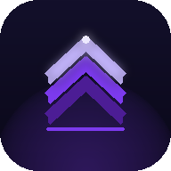

So we'll skip the lecture. Transmute turns the energy you keep wasting into the man you keep promising to become. Take sixty seconds — this part matters.
The loop ends here.
The urge. The few minutes of nothing. The counter back to zero, and the quiet after. You've fought it alone and reset more times than you'd admit. That stops now — not with willpower, with a plan.
The energy doesn't disappear.
Every urge you don't spend is fuel — for focus, training, confidence, drive. That's transmutation: not white-knuckling, redirecting. Transmute is the daily practice that makes it real.
Energy that lastsThe crashes fade, mornings get easier. The body pays you back for what you keep.
Confidence people feelNot arrogance — presence. You stop flinching and start holding your ground.
Discipline that spreadsWin here and it bleeds into everything — the gym, your goals, your word.
First — what's your name?
So this feels like yours, not ours. We'll use it to speak to you — never to track you. It stays on your device.
What are you chasing?
Pick whatever pulls at you. This shapes what the app reflects back.
Where are you starting?
Set this once, honestly — it's the only time you can change it. Your streak grows from here.
Your secret weapon.
Most powerful feature
Urge Wave · SOS Tool
When an urge hits, you have seconds before it controls you. Urge Wave meets you in that moment with a guided, real-time technique to ride the wave and come out stronger.
Breath-paced urge surfing
Real-time intensity tracker
Grounding & redirect tools
Tracks your patterns over time
Free for your first 7 days. After that, unlock it for less than a coffee a month. Your streak is worth it.
Why are you here?
In a hard moment, your own reason hits harder than anything we could write. Put it into words once, and we'll show it back to you the instant an urge strikes.
Optional. You can always add or change this later in Settings.
This is your line in the sand.
Not a resolution you'll forget by Friday — a decision. Make it with your whole chest.
Hold until it fills.
Day 1 starts now.
Free to use. No account. Works offline. Your data stays on your device.
Free · No account needed · Works offline
Tap Share at the bottom of Safari
Tap Add to Home Screen
Tap Add and you're in!

Transmute
0
days
0% rewired
Day 0 · Begin
Founder · lifetime access
0
Best streak
0
Check-ins
–
Avg energy
0
Urges beaten
0
Best urge streak
Latest check-in
No check-ins yet
Tap the check-in card below to log your first entry
Your journey starts now.
Every streak starts at zero. The hardest part is committing to day one.
How it works
Log a daily check-in
Track mood, energy and focus each day. Watch how you evolve over weeks.
SOS when an urge hits
The SOS tab opens Urge Wave, a real-time tool to ride out any urge.
Tabs are yours to rearrange
Long-press any tab to drag and reorder them, putting what matters most within reach.
Discover your phase
As your streak grows, learn what each stage means for your body and mind.
How are you feeling right now?
Tap a mood to log today's check-in
The Path
Lesson 1 of 90
Begin the 90-day path
2 minutes a day · one lesson at a time
Weekly review due
7+ days since your last review.
Already logged today
Your check-in is saved.
How are you feeling right now?
Energy 5/10
Mental clarity 5/10
Urge intensity 3/10
Social confidence 5/10
Urge triggers today?
Journal note
Weekly review
Take 5 minutes to reflect honestly.
What went well?
What was hardest?
What did you notice about yourself?
Intention for next week
Your journey
Every check-in, review and urge you've ridden out.
No entries yet.
Your insights
What's actually changing, based on your own check-ins.
Your phases
The full arc of the journey, and exactly where you stand on it.
The full journey
Sexual transmutation is the art of redirecting your most primal energy upward, into creativity, discipline, presence, and power. Choose a practice below.
The Practice of Pranayama
Prana is your life-force; ayama means to direct it. These breath techniques take the charge that builds during retention and draw it up the spine, into focus, drive and calm, instead of letting it discharge. Start with whichever one fits the moment.
Breath of Fire
Kapalabhati · Skull-Shining Breath
When an urge hits~3 minBeginner
Rapid, pumping exhales that pull the charge up out of the pelvis fast. The single best tool the moment a craving spikes.
1Sit tall, spine straight, shoulders relaxed. Rest your hands on your knees.
2Inhale about halfway through the nose. No need to fill all the way.
3Exhale in a sharp burst by snapping your lower belly inward. The inhale rebounds on its own, so don't force it.
4Find a steady rhythm of about one pump per second. Keep the chest still. All the movement is in the belly.
5After 30 pumps, inhale fully, hold gently for a few seconds, then release slowly.
6Rest for a few normal breaths, then repeat for 3 rounds.
The instant an urge rises, 30 fast pumps move the energy from the pelvis up into the head and chest. You'll feel it shift in real time.
Skip if you're pregnant, or have high blood pressure, heart issues, or have just eaten. Stop and breathe normally if you feel light-headed.
Alternate-Nostril Breath
Nadi Shodhana · Channel Purification
Daily reset~5 minBeginner
Steadies a restless, over-stimulated mind and balances the nervous system. Best as a calm morning practice rather than an emergency tool.
1Sit comfortably. With your right hand, fold the index and middle fingers down. You'll seal the right nostril with your thumb and the left with your ring finger.
2Close the right nostril with your thumb. Inhale slowly through the left for a count of 4.
3Seal both nostrils (ring finger closes the left). Hold gently for 4.
4Lift the thumb and exhale through the right nostril for a count of 8.
5Inhale through the right for 4, seal both and hold for 4, then exhale through the left for 8.
6That completes one round. Build up to 10 rounds, keeping the breath smooth and silent.
Do this first thing in the morning to settle the mind before it reaches for a cheap hit of dopamine.
Root Lock
Mula Bandha · The Seal at the Base
Seals the energy~3 minIntermediate
A subtle internal lift of the pelvic floor that keeps the charge from draining downward and guides it up the spine. The core engine of transmutation.
1Sit tall with a straight spine, or stand. Take a few slow breaths to settle.
2Inhale fully. As you hold the breath in, gently lift and contract the pelvic floor: the muscles between the genitals and the anus (the ones that stop the flow of urine).
3Keep everything else soft: jaw, belly and shoulders relaxed. Only the root lifts.
4Hold the lift and the breath for as long as it's comfortable, then release the lock as you exhale slowly.
5As you lift, picture the charge drawing up from the base of the spine toward the crown. Repeat for 10 slow rounds.
Lock on the inhale-hold, release on the exhale. Paired with Breath of Fire during a peak urge, it's unbeatable.
Guided meditations
Sit somewhere quiet with your spine tall. Pick a session below. A calm voice and breathing guide will lead you, with gentle pauses to rest in. 🎧 Headphones recommended.
Energy Transmutation
~15 minutes · 5 phases
TAP BEGIN
Settling in…
Postures that hold the charge
These postures build the physical foundation for transmutation: a strong pelvic floor, an open spine, and the upright posture of a man in command of himself. Follow the glowing figure and the cues on each pose.
Horse Stance
Zhan Zhuang · Standing Pillar
Grounds the energyHold 1–5 minBuilds will
Sink into an invisible chair. Burning legs and a still mind: this is how Shaolin monks have cultivated power for centuries.
1Stand with feet a little wider than shoulder-width, toes turned slightly out.
2Bend your knees and sink down as if sitting on an invisible horse, working toward thighs near parallel to the floor.
3Spine tall, chest open, chin lightly tucked. Float your arms into a circle at chest height, as if holding a large ball.
4Hold for 1–5 minutes. Breathe slow and deep. Keep the mind still on the breath.
The burn in your legs is the energy being forged. Breathe through it rather than away from it.
Root Squeeze
Ashwini Mudra · Horse Gesture
20–100 repsAnytime, anywhereBuilds the seal
Rhythmic squeezing of the anal sphincter strengthens the pelvic floor at the source: the muscle that keeps the energy from draining downward.
1Sit tall and cross-legged (or lie on your back), spine long, body relaxed.
2Inhale, and firmly contract the anal sphincter (squeeze and lift) for about 2 seconds.
3Release fully on the exhale. That's one repetition.
4Do 20–50 reps, building toward 100 a day over time.
This is the anal-sphincter squeeze. The subtler pelvic-floor lift held on the breath is Mula Bandha. See it in Pranayama.
Bridge Pose
Setu Bandha · Open the Channel
Opens the spineHold 30–60s × 5
Lifts the hips to open the front of the body and fire the pelvic floor, clearing the channel from the base of the spine to the crown.
1Lie on your back, knees bent, feet flat and hip-width apart, arms resting by your sides.
2Press your feet down and lift your hips toward the ceiling.
3Squeeze your glutes and gently engage the pelvic floor at the top.
4Hold 30–60 seconds, breathing slowly. Lower with control and repeat 5 times.
Picture the energy flowing freely from root to crown along the open arch of your spine.
Mountain Pose
Tadasana · Posture & Presence
Stands you tallHold 2–5 minBeginner
The simplest and most overlooked pose. Standing tall opens the energy centres a slouch compresses, and trains your body to carry presence.
1Stand with feet together (or hip-width), weight spread evenly through both soles.
2Engage the thighs, tuck the tailbone slightly, lift and open the chest.
3Imagine a golden thread drawing the crown of your head toward the sky, spine long.
4Breathe deeply for 2 minutes, sensing the whole column of energy from feet to crown.
Do it first thing, before you touch your phone. It sets the energetic tone for the whole day.
Top community stories
r/semenretention
Real experiences shared by the community. Tap arrows or swipe to browse.
Loading stories...
1 / 20
Urge Surfing
The average urge peaks and passes in 3–7 minutes. You don't need to fight it, just ride the wave.
Urges are like ocean waves: they build, peak, and always break. Open this the moment one starts.
0
beaten this streak
0
best ever
How urge surfing works
1
Notice it: acknowledge the urge without judgement. It's energy, not a command.
2
Ride it: use one of the tools below to stay present as it peaks.
3
Watch it pass: it always does. Every wave breaks.
Urge Wave
How strong is it right now?
Name it honestly. That alone takes some of its power. Then watch it pass.
Urge Wave · active
85
intensity
0:00
elapsed
↑ rising
direction
~5 min
avg time to pass
Peak · keep breathing, it's already falling
Ready when you are
Box breathing redirects energy upward and out of the urge. Breathe with the orb — in as it blooms, out as it releases. It ends on its own after 4 cycles.
5:00
The urge will pass before this timer ends, guaranteed
Don't act. Just watch the seconds pass. Every tick is the urge getting weaker.
"I am not my urges. I am the awareness that watches them pass."
–
days of power stored. One urge is not worth losing that.
"
Your reason
Why did you start?
Write it once, in your own words, and we'll show it back to you here whenever an urge hits.
You've already won
Every man who ever broke said "just this once." That's exactly what the urge is saying right now. You know how that story ends. Write a different one.
This feeling is your power
What you're feeling right now is energy trying to escape. Hold it. In 10 minutes it becomes clarity, drive, and presence. Let it go and it becomes regret.
Most men will give in today
Right now, thousands of men are facing the same wave and breaking. You're still here. That already makes you different. Prove it.
No clock here. Close it out whenever the urge has eased for you, even a little.
Energy Transmuted
You surfed it.
That urge is gone. The energy stayed yours. This is exactly what the practice looks like.
Streak still alive
Every wave you ride makes the next one smaller. You are becoming stronger than your impulses.
What helped you ride it out?
👋
Welcome to Transmute
What should we call you?
Settings
Install app
Tap above to install Transmute on your phone
Install on iPhone:
1. Tap the Share button in Safari 2. Tap Add to Home Screen 3. Tap Add
App already installed on your device
Language
Colour theme
Text size
Your reason
Why did you start? We'll show this back to you in the SOS Remind tool when an urge hits.
Daily reminder
Get nudged if you haven't logged by evening. Keeps your streak alive.
Bug report
Found an issue? Describe it and send to the developer.
Preview / demo
Load a sample profile to preview the full Predictive Insights screen without weeks of logging. Your real data is saved and restored when you exit.
Start over
Permanently erase everything on this device — streaks, history, progress and settings — and go back to the very start.
Founder · lifetime access
Transmute · v3.0
🔥
Day 7
One Week Strong
A slip isn't the end
Every day you held changed you, and none of that resets. Your best streak and your insights stay with you. This is just day one of the next one.
Erase everything?
This wipes the app back to a brand-new install. It cannot be undone.
You will permanently lose:
Your current streak and all past streaks
Every check-in, urge win and weekly review
Path progress, insights and milestones
Your reason, name and all settings
You'll start again from onboarding. A paid membership can be restored on the upgrade screen.
Rewiring score
0/100
How far your brain has rewired — built from four habits, not just the streak. It climbs as you show up, and a slip never takes all of it back.
Streak fills half the score. The rest — check-ins, urges beaten and Path lessons — is progress that stays with you even if the streak resets.
Urge Wave
How intense is this urge right now?
85
Surf this urge now
0
days built
Don't hand it back to the urge. Everything you need to hold the line is one step away.
Transmute Membership
You know it works. Go all in.
One membership unlocks every tool built to keep you on the path, and everything new as it lands.
Urge Wave — ride out any urge in real time
The full meditation library, plus a new session every month
Insights that learn your triggers and danger windows
Grounding tools and affirmations for the hard moments